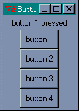
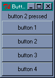
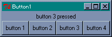
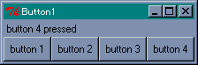
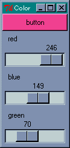

GUI アプリケーションの場合、ユーザーからの入力やシステムの状態変化など、ある出来事をきっかけにプログラムが実行されます。この出来事を イベント (event) といい、イベントをきっかけにしてプログラムが起動されることを イベントドリブン (eventdriven : イベント駆動) といいます。イベントドリブン型のアプリケーションは、一般に次のようなメインルーチンを持っています。
2 から 4 を イベントループ と呼び、アプリケーションはユーザーからの入力などのイベントを待ちます。そして、3 の処理に対応する機能が バインディング (binding) です。バインディングは、ウィンドウでイベントが発生したときに、それに応じて定義したプログラムを実行します。このプログラムを イベントハンドラ とか コールバック関数 と呼びます。
GUI アプリケーションとしての最低限の機能は Perl/Tk が面倒を見てくれるので、私達はアプリケーション固有の処理をプログラミングするだけで済みます。
Perl/Tk で GUI アプリケーションを作る場合、次のような手順が必要になります。
このほかに、必要に応じてコールバック関数を作成します。Tcl/Tk の場合、1 と 3 の処理はプログラムする必要はありませんが、Perl/Tk では自分でプログラムを記述します。それでは実際にプログラムを作ってみましょう。ボタンをひとつ表示します。
リスト : ボタンの表示 use Tk; $top = MainWindow->new(); $button = $top->Button( -text => 'Perl/Tk button 1' ); $button->pack(); MainLoop();
まず use Tk でモジュール Tk.pm をロードします。次に、MainWindow->new() でメインウィンドウを作成します。Tk.pm はオブジェクト指向で作られています。矢印 -> はメソッドを呼び出す構文で、クラス MainWindow のメソッド new を呼び出しています。一般に、new はクラスのインスタンス（オブジェクト）を生成するメソッドです。この場合、MainWindow のインスタンスを生成し、このインスタンスが画面上のメインウィンドウに対応します。
次にボタンを作ります。Tk では GUI 用の部品のことを ウィジェット (widget) と呼びます。Tk にはたくさんのウィジェットが用意されていて、それをウィンドウに配置することで簡単に GUI アプリケーションを作成することができます。
メインウィンドウにボタンを配置するには、$top->Button() のように Button メソッドを呼び出します。ウィジェットを生成するメソッドは new ではなく、ウィジェットを表すクラス名がメソッドに対応しています。引数 text => 'Perl/Tk button 1' は、ボタンに表示されるテキストを指定します。ウィジェットを生成するメソッドは、そのウィジェットに対応するインスタンスを返します。
この段階では、ボタンはまだ配置されていません。ボタンの配置はメソッド pack で行います。Tk の場合、ウィジェットの配置は ジオメトリマネージャ が行います。3 種類のマネージャがあって、pack はそのうちのひとつです。$button->pack() が実行されると、ウィンドウにボタンが配置されます。最後に MainLoop を呼び出して、イベントループを開始します。
簡単なプログラムですが、Perl/Tk で GUI アプリケーションを作る場合の基本的な構造を表しています。あとは、イベントに対応するコールバック関数を作ります。この例題では、ボタンを表示しただけですが、押したときの動作をプログラムすることができます。
Tk に用意されている主なウィジェットを表に示します。
| ウィジェット名 | クラス名 | 概要 |
|---|---|---|
| フレーム | Frame | ウィジェットを格納する枠組みを作る |
| ラベル | Label | 文字列やイメージを表示する |
| メッセージ | Message | 複数行の文字列を表示する |
| ボタン | Button | ボタンを作る |
| ラジオボタン | Radiobutton | ラジオボタンを作る |
| チェックボタン | Checkbutton | チェックボタンを作る |
| リストボックス | Listbox | リストボックスを作る |
| スクロールバー | Scrollbar | スクロールバーを作る |
| スケール | Scale | スケールを作る |
| エントリー | Entry | 1 行の文字列の入力と編集 |
| メニュー | Menu | メニューを作る |
| メニューボタン | Menubutton | メニューボタンを作る |
| ビットマップ | Bitmap | ビットマップを作る |
| キャンバス | Canvas | キャンバスを作る |
| テキスト | Text | テキストの入力と編集 |
なかにはあまり見かけないものもありますが、大部分は Windows でもお馴染みのウィジェットだと思います。このほかにも、Perl/Tk 独自のウィジェットがあります。
ウィジェットは次の形式で生成します。
$widget = $parrent->widgetClass( option => value, .... );
これで $parrent に配置するウィジェットが生成されます。$parrent にはメインウィンドウやほかのウィジェットのインスタンス、widgetClass には生成するウィジェットのクラス名を指定します。返り値は生成したウィジェットのインスタンスです。メインウィンドウもウィジェットのひとつですが、MainWindow->new() で生成します。
ボタンの例題のように、ウィジェットにはユーザーがデータを設定することができます。これを オプション といいます。PerlTk では プロパティ と呼ぶ場合もありますが、このドキュメントでは Tcl/Tk と同様にオプションと呼ぶことにします。最初に、ほとんどのウィジェットで共通するオプションを説明します。
| -foreground (-fg) | 文字や線を描くのに使用する色を指定 |
| -background (-bg) | 背景色の指定 |
| -text | ウィジェット内に表示されるテキスト |
| -textvariable | テキストを格納する変数 |
| -image | ウィジェット内に表示されるイメージ |
| -bitmap | ウィジェット内に表示されるビットマップ |
| -borderwidth (-bd) | ウィジェットの枠の幅 |
| -relief | ウィジェットの枠のスタイル |
| -height | ウィジェットの高さ |
| -width | ウィジェットの幅 |
| -anchor | ウィジェットや表示されるデータの位置を指定 |
ウィジェットの幅と高さは、テキストを表示するウィジェットでは文字数、それ以外のウィジェットはピクセル単位となります。オプションは option => value の形式で指定します。
オプションはウィジェットを生成するときに指定しますが、あとからオプションの値を変更することもできます。これには configure メソッドを使います。また、オプションの値を参照するには cget メソッドを使います。
$widget->configure( option => value, ..... ); $widget->cget( option );
configure と cget は全てのウィジェットで共通に使用することができます。Perl/Tk では、このようなウィジェットを操作するメソッドが多数用意されています。ちなみに、Tcl/Tk ではウィジェットを操作するメソッドのことを、「ウィジェットコマンド」と呼びます。
最初は簡単に扱えるボタン ( Button ) とラベル ( Label ) から始めましょう。ラベルはウィンドウに文字列を表示するウィジェットです。まず、テキストを表示するウィジェットでよく使用されるオプションを示します。
| -font | 使用するフォント |
| -underline | 下線つき表示する文字位置 |
| -padx | 水平方向の詰めもの |
| -pady | 垂直方向の詰めもの |
ボタンにはもうひとつ重要なオプションがあります。
-command 押したときに実行する関数を指定
たとえば、-command に Perl/Tk を終了する関数 exit を指定すると、そのボタンを押すとアプリケーションが終了することになります。このような関数を コールバック関数 と呼びます。コールバック関数は、関数へのリファレンス または 無名の配列 で指定します。たとえば、前回の例題でボタンを押したら終了する場合は、次のように指定します。
$button = $top->Button( -text => 'Perl/Tk button 1', -command => \&exit );
無名の配列を使う場合、最初の要素が関数へのリファレンス、あとの要素はその関数に渡される引数となります。たとえば、関数 foo( 10, 20 ) を呼び出したい場合は次のようになります。
-command => [ \&foo, 10, 20 ]
あとから例題として出てきますが、押したボタンを識別するのに、この方法がよく使われます。
それから、コールバック関数にメソッドを登録する場合は、次のように行います。
[ 'methodname', $object, args, ..... ]
最初にメソッド名 methodname、その次に呼び出すメソッドのインスタンス（オブジェクト）、最後に引数を指定します。
$object->methodname( args, ..... );
これで、通常のメソッドを呼び出す形式と同じようにメソッドが呼び出されます。
ボタンを作ったら、それをウィンドウに配置しないといけません。Tk ではジオメトリマネージャ (Geometry Manager) がウィジェットの配置を担当し、3 種類のマネージャが用意されています。
いちばんよく使われるマネージャが Packer です。Placer はウィジェットの位置を座標で指定するため、並べて表示する場合には設定が少々面倒です。たいていの場合は Packer で用が足りるので、Placer を使う機会はあまりないでしょう。電卓やマインスイーパーのように、ボタンを格子状に配置する場合は Gridder が便利です。
それでは簡単な例題として、押したボタンの番号をラベルに表示するプログラムを作ります。最初にラベルを定義します。
リスト：ラベルの定義 use Tk; $top = MainWindow->new(); $buffer = ""; # ラベル用の変数 $l = $top->Label( -textvariable => \$buffer ); $l->pack();
オプション -textvariable で変数 $buffer を指定します。変数の指定にはリファレンスを使います。これにより、変数 $buffer に格納されている文字列がラベルに表示されます。これはとても便利な機能で、変数の値を書き換えるだけで表示を変更することができます。
ところで、ラベルのインスタンスを変数 $l にセットし、それから pack を呼び出していますね。この部分は、次のようにプログラムすることができます。
$top->Label( ..... )->pack();
あとからウィジェットのメソッドを呼び出さないのであれば、返り値のインスタンスを受け取る必要はありません。つまり、すべてのオプションをウィジェットの生成時に設定すれば、あとは MainLoop を呼び出すだけでいいのです。これからは必要な場合にのみ、ウィジェットのインスタンスを保持することにします。
次はボタンを作ります。複数のボタンを作る場合、それに対応するコールバック関数を同じ数だけ作るのでは面倒です。そこで、コールバック関数はひとつだけ作成し、それにボタンの番号を渡すことにします。プログラムは次のようになります。
リスト : ボタンの定義
# コールバック関数
sub push_button {
my $n = shift;
$buffer = "button $n pressed";
}
# ボタンの生成
foreach $n (1, 2, 3, 4) {
$top->Button( -text => "button $n",
-command => [\&push_button, $n] )->pack();
}
MainLoop();
コールバック関数は push_button とし、押されたボタンの番号を引数として渡します。ボタンは 4 つ作成して番号で区別します。ここで、-text の値は変数置換によってボタンの番号が設定され、-command の値も、無名の配列にはボタンの番号がセットされることに注意してください。つまり、番号 1 のボタンを押した場合、呼び出される関数は &push_button( 1 ) になるのです。これでどのボタンが押されたか知ることができます。
それでは実行してみてください。
 button 1 を押した動作ボタンが縦に 4 つ表示されましたね。そして、ボタンを押すといちばん上に文字列が表示されます。つまり、ボタンを押すという動作によってプログラムが実行されたのです。
次は、pack について説明しましょう。pack はウィジェットを上から順に詰め込み、ウィンドウに配置するパッケージマネージャです。例題ではボタンの幅がウィンドウより小さいですが、これをいっぱいに広げるには -fill オプションを使います。方向は x, y で指定します。両方向に広げるには both を指定します。実際に -fill を 追加して確かめてください。
 -fill => both を指定し、button 2 を押した動作詰め込む方向を変えるにはオプション -side を使います。指定できる値は top, bottom, left, right の 4 つです。ウィジェットによって詰め込む方向を変えてもかまいません。ボタンを配置する pack に -side left を追加して実行してみましょう。一番上にラベルが配置され、その下にボタンが 4 つ左から順番に並べられます。
 -side => left を指定し、button 3 を押した動作このとき、ラベルはウィンドウの中央に表示されます。これを左側に寄せるには -anchor オプションを設定します。指定が省略された場合は中央となります。指定方法は次の記号を使います。
nw --- n --- ne | | w c e | | sw --- s --- se 図：-anchor の指定方法
記号はそれぞれ e (East), w (West), s (South), n (North), c (Center) を表します。ラベルを pack するときに、オプション -anchor => w を指定すると左寄せに表示します。
 -anchor => w を指定し、button 4 を押した動作このほかにも、 pack にはいろいろなオプションやメソッドが用意されています。
今回は、テキストやボタンに色をつけてみましょう。Tk の場合、色の指定は名前または数値で行います。名前は red, green, blue のように指定します。色の名前は大文字小文字の区別をしません。red と RED は同じ色を表します。数値の場合は、赤、緑、青の三原色を 16 進数で指定します。指定方法には、次の 4 通りの形式があります。
色の指定は # から始まり、R, G, B はそれぞれ赤、緑、青の強度を表す数値です。それぞれの色を表す桁数は同じでなければいけません。1. では、R, G, B が 16 段階なので 4096 色の指定ができます。2. は 256 段階なので、約 1600 万色の指定ができます。3. 4. はほとんど使われることはないでしょう。実際の表示は使用しているハードウェアの環境に依存します。
それでは、R, G, B の値で色がどのように変化するか、サンプルプログラムを作って確かめてみましょう。数値の入力はキーボードから行ってもいいのですが、ここではスケール (scale) というウィジェットを使いましょう。スケールは整数値を表示し、スライダをドラッグするかスケールをクリックすることで、その値を更新することができます。スケールで使用する主なオプションを表に示します。
| -label | スケールのラベル |
| -from | スケールの最小値 |
| -to | スケールの最大値 |
| -orient | スケールの方向 |
| -showvalue | 値を表示するか |
| -variable | スケールの値を格納する変数 |
| -command | 値が変化したときに実行するコマンド |
| -resolution | 解像度 |
-label はスケールの隣に表示する文字列を指定し、-form と -to で値の範囲を指定します。-orient はスケールの方向を指定するもので、horizontal または h を指定すると水平になり、vertical または v で垂直になります。デフォルトでは垂直に設定されます。
-showvalue は現在の値を表示するかを設定します。-variable はスケールの値を格納する変数を指定します。スケールの値はメソッドで求めることもできますが、グローバル変数を設定した方が簡単です。
-command は、スケールの値が変更されたときに実行する関数を指定します。このとき、スケールの値が引数として関数に渡されます。たとえば、関数 foo を指定した場合、呼び出されるときは foo( 128 ) となります。
このほかにも、ウィジェットの大きさを設定するオプションがあります。スケールには configure や cget のほかに、次に示すメソッドが用意されています。
get と set 以外のメソッドは使う機会はあまりないでしょう。
それでは、ボタンの背景色を変化させるプログラムを作ります。
リスト : スケールの使用例
use Tk;
# スケールの値を格納する変数
$red = 0;
$blue = 0;
$green = 0;
# ボタンの背景色を変更
sub change_color {
my $color = sprintf("#%02x%02x%02x", $red, $green, $blue );
$button->configure( -bg => $color );
}
# メインウィンドウ
$top = MainWindow->new();
# ボタン
$button = $top->Button( -text => "button", -bg => '#000' );
$button->pack( -fill => 'both' );
# スケール
$top->Scale(-label => red,
-orient => h,
-from => 0,
-to => 255,
-variable => \$red,
-command => \&change_color )->pack( -fill => both );
$top->Scale(-label => blue,
-orient => h,
-from => 0,
-to => 255,
-variable => \$blue,
-command => \&change_color )->pack( -fill => both );
$top->Scale(-label => green,
-orient => h,
-from => 0,
-to => 255,
-variable => \$green,
-command => \&change_color )->pack( -fill => both );
MainLoop();
スケールの値はそれぞれ red, blue, green というグローバル変数に格納します。変数の値は 0 に初期化しておきます。ボタンのインスタンスは背景色を変更するときに必要になるので、グローバル変数 $button に格納しておきます。値が変化したときに実行する関数が change_color です。
関数 sprintf を使って red, green, blue の値をカラーコードに変換します。数値を 2 桁にそろえるため書式は %02x としています。その後、ボタンの背景色を configure メソッドで変更します。これで、スライダの動きによってボタンの色を変化させることができます。
 スライダで RGB を指定する